비서-1급 (2020-05-10 기출문제)
1과목: 비서실무
1. 김 비서는 태평양지역 본부장의 비서로 근무하고 있다. 매월 말에 각 지역 본부장의 월별 일정을 본사에 보고해야 하므로 일정관리 소프트웨어인 아웃룩(Outlook)을 이용하려고 한다. 다음 중 비서의 행동으로 가장 부적절한 것은?
- 상사가 아웃룩에 익숙하지 않다면 비서가 작성한 아웃룩 상의 일정을 상사가 원하는 때에 살펴볼 수 있도록 '캘린더 공유하기(Share Calendar)' 기능부터 설명해 드린다.
- '캘린더 공유하기' 기능에서 비서가 상사의 일정을 볼 수 있도록 설정하면 편리하다.
- 상사가 '캘린더 공유하기'를 승낙하면 관련된 사람들과도 공유하여 상사의 일정을 열람, 수정 가능하도록 설정한다.
- 아웃룩으로 일정을 작성해서 비서의 업무용 핸드폰과도 연결하여 수시 확인이 되도록 한다.
(정답률: 83%)

2. 인공지능 관련 기술이 급속히 발달하고 있는 시대의 흐름에 발맞추어 “미래 비서 직무를 위한 포럼”이 개최되었다. A 회사의 비서들도 포럼에 참가하였고 참가 후 사내 세미나를 열었다. 아래는 포럼에 참가한 비서들의 대화인데 이 중 가장 부적절한 것은?
- “비서의 직무 수행 시 기밀보장, 책임감, 정직, 자기계발, 충성심 등 직업윤리는 앞으로도 중요한 비서의 자질이다.”
- “인공지능 기술의 발달로 인해 비서의 직무 중 상사의 경영활동 보좌는 줄어들고 상사의 행정 업무 보좌에 집중하게 될 것이다.”
- “비서의 직무는 다른 사무직과 비교하여 상대적으로 정형적이지 않고 동시 다발적으로 다양한 업무를 수행하므로, 자동화로 대체할 수 없는 부분에서 역량을 향상시키려는 노력이 요구될 것이다.”
- “4차산업혁명 시대에는 인공지능 기술의 도움을 받을 것이므로 단순 사무 지원 업무 보다는 산업에 대한 이해와 업무관련 IT 기술을 갖춘 실무역량이 요구될 것이다.”
(정답률: 77%)
3. 다음 중 경조사 종류에 해당하는 한자어가 잘못 연결된 것은?
- 결혼: 祝結婚, 祝華婚, 祝聖婚
- 문병: 賻儀, 謹弔, 弔意
- 축하: 祝就任, 祝昇進, 祝榮轉
- 개업, 창업: 祝開業, 祝開館, 祝創立
(정답률: 63%)
4. 다음은 정도물산 김정훈 사장의 비서인 이 비서의 내방객 응대태도이다. 가장 적절하지 않은 것은?
- 김정훈 사장이 선호하는 내방객 응대 방식을 파악해 두었다.
- 약속이 되어 있는 손님에게는 성함과 직책을 불러드리면서 예약 사항을 비서가 알고 있음을 알려드렸다.
- 비서가 관리하는 내방객 카드에 회사 방문객의 인상이나 특징을 적어두었다.
- 내방객 중 상사와 각별하게 친분이 있는 경우, 선착순 응대에 예외를 둔다.
(정답률: 84%)
5. 비서가 상사의 대외활동을 위해 지원하는 업무로 가장 적절한 것은?
- A 비서는 상사의 소셜미디어를 관리하는 차원에서, 올라오는 질문이나 댓글에 답변을 달고 주제별로 답변을 분류하여 매주 보고 드리고 있다.
- SNS를 통하여 기업 내·외와 소통을 하는 상사를 위해, B비서는 자신의 개인 소셜미디어를 활용해 회사와 상사에 관한 글들을 자주 올리고 있다.
- C 비서는 자신의 개인 소셜미디어에 본인의 소속과 이름, 직책을 명확하게 밝힌 상태에서 회사 제품을 홍보하고 있다.
- D 비서는 상사의 SNS에 팔로워로 동참하면서 불만사항으로 올라온 글들을 이슈별로 정리하여 상사에게 보고하고 소통할 수 있는 방안을 제시해 드리고 있다.
(정답률: 70%)
6. 사장은 김 비서에게 다음과 같이 지시를 내렸다. 이 때 비서의 지시 받는 모습 중 가장 올바른 대처는?
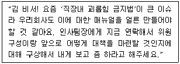
- “네 알겠습니다.”라고 대답을 한 뒤 바로 인사팀장에게 전화를 걸어 “팀장님, 사장님께서 '직장내 괴롭힘 금지법'에 관한 매뉴얼을 만들어서 보고하라고 하십니다. 언제까지라는 말씀은 없으셨습니다.”라고 말씀드린다.
- 지시를 받은 후 “사장님, 그럼 팀장님께는 '직장내 괴롭힘 금지법' 매뉴얼을 언제까지 만들어서 보고하라고 전달할까요?”라고 질문을 하였다.
- “네. 알겠습니다.”라고 대답을 한 뒤 바로 인사팀장에게 전화를 걸어 “팀장님, 사장님께서 '직장내 괴롭힘 금지법' 관련 위원회를 구성해 매뉴얼 구상을 보고하라고 하십니다. 언제까지라는 말씀은 안하셨습니다.”라고 말씀드린다.
- 지시를 받은 후 “사장님! '직장내 괴롭힘 금지법'과 관련해서 우리 회사의 대책 방안에 관한 보고는 언제까지 올리라고 전달할까요?”라고 질문을 하였다.
(정답률: 57%)
7. 다음은 상사의 미국 출장 일정이다. 비서의 업무 수행 내용으로 가장 적절한 것은?
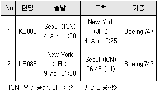
- 비서는 상사의 출장기간을 고려하여 출장 후 국내 협약식 참가 일정을 4월 10일 오전 11시로 계획하였다.
- 출장 전에 참가하여야 할 전략기획회의 일정이 조정되지 않아 4월 4일 오전 7시 조찬으로 전략기획회의 일정을 변경하였다.
- 비서는 예약된 호텔의 check-in과 check-out 시간을 확인하여 상사에게 보고하였다.
- 상사는 4월 9일 새벽에 인천공항에 도착하므로 시간 맞춰 수행기사가 공항에 나가도록 조치하였다.
(정답률: 68%)
8. 박 비서는 상사가 개최하는 행사를 보좌하는 업무를 수행하게 되었다. 다음 중 박 비서의 업무태도로 가장 옳지 않은 것은?
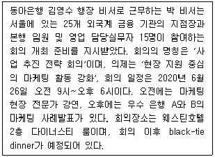
- 박 비서는 회의 이후 예정된 만찬의 좌석 배치에 관해 상사에게 보고하였다.
- 박비서는 6하 원칙에 따라 who(김영수 행장), when(2020년 6월 26일), where(웨스틴호텔 2층 다이너스티 룸), why(현장지원 중심의 마케팅 활동 강화), What(사업 추진 전략 수립), how(전문가 강연, 사례발표)로 회의 내용을 정리하였다.
- 참석자들에게는 행사 후 일주일 이내에 감사장을 보내되, 내용은 우선 감사의 말을 쓰고, 당일 행사 중에 혹 실례를 범했다거나 불편을 준 것은 없었는지 염려하는 마음을 담아 보냈다.
- 저녁 만찬은 참석자의 서열에 따라 원형 테이블로 배치하고 드레스코드는 격식을 갖춘 연미복 차림이므로 사전에 참석자와 행장님에게 알려 드렸다.
(정답률: 55%)
9. 다음 중 상사와 원만한 인간관계를 위하여 비서가 취할 가장 적절한 행동은?
- 비서 A는 상사의 급한 성격 때문에 스트레스를 받아 사내 스트레스관리 프로그램에 참여하여 매주 자신의 사례를 공유하며 조언을 받았다.
- 비서 B는 상사의 업무지시가 과다하다고 판단되어 상사에게 이메일로 자신의 상황을 전달하였다.
- 비서 C는 본인 역량을 넘어선 높은 수준의 업무가 주어지자 상사에게 본인의 업무영역이 아니므로 적절한 사람을 추천하겠다는 의견을 제시하였다.
- 비서 D는 상사의 지시를 받고 나와 보니 이전의 지시와 상반된 내용이 있어 업무를 시작하기 전에 상사에게 확인하였다.
(정답률: 78%)
10. 전화응대 업무에 대한 설명으로 가장 적절한 것은?
- 상사가 해외에 상품 주문을 요청하여 상품 재고 여부를 직접 전화로 알아보기 위해 국제클로버 서비스가 가능한지 확인해 보았다.
- 업무상 자리를 두 시간 정도 비울 예정이라 발신 전화번호 서비스를 이용하였다.
- 상사가 회의 중일 때 당사 대표이사로부터 직접 전화가 와서 비서는 상사가 지금 회의 중임을 말씀드리고 회의가 끝나는 대로 바로 전화 연결하겠다고 응대하였다.
- 상사가 연결해달라고 요청한 상대방이 지금 통화가 힘들다고 하여 비서는 다시 전화 하겠다고 한 후 이를 상사에게 보고하였다.
(정답률: 47%)
11. 비서의 방문객 응대 태도로 가장 적절한 것은?
- 비서 홍여진씨는 사장님을 만나고 싶다는 손님이 안내데스크에서 기다린다는 연락을 받았다. 현재 사장님은 부재중이고 선약이 된 손님은 없는 시간이었으므로 사장님이 안 계신다고 손님에게 전해달라고 안내데스크에 이야기 하였다.
- 비서 박희진씨는 약속한 손님이 정시에 도착하였으나 상사가 면담 중이라 양해를 구하고 접견실로 안내하였다. 그리고 면담 중인 상사에게 손님이 기다린다는 메모를 전달하였다.
- 비서 김영희씨는 평소처럼 손님에게 차 종류를 여쭈어보았더니 시원한 물로 달라고 했으나 손님에게 물 대접하는 것은 예의가 아닌 듯하여 시원한 주스를 드렸다.
- 비서 채미영씨는 2시에 예약된 A 손님이 기다리고 있는 시간에 상사와 개인적으로 약속을 한 B 손님과 겹치게 되어 당황했으나 A 손님에게 양해를 구하고 B 손님을 먼저 안내하였다.
(정답률: 82%)
12. 비서의 자기개발 방법으로 가장 적절한 것은?
- 결재 올라온 문서들을 읽으면서 회사의 경영환경 동향을 파악하기 위해 노력한다.
- 상사의 업무처리 방법과 아랫사람을 대하는 태도를 닮도록 노력한다.
- 회사 거래처 자료를 보관해 두었다가 퇴사 후에도 지속적으로 거래처와 연락을 취하여 그들과의 인간관계가 잘 유지되도록 노력한다.
- 좀 더 많은 사람들과 좋은 인간관계를 맺기 위해서는 항상 상대방에게 맞추는 연습을 한다.
(정답률: 67%)
13. 상사의 인간관계 관리자로서 비서의 역할에 대한 설명으로 가장 적절하지 않은 것은?
- 상사가 조직 내외의 사람들과 유기적인 관계가 잘 유지될 수 있도록 상사의 인간관계에 항상 관심을 기울인다.
- 조직 내에 소외되는 사람들이 있을 경우 상사에게 보고하여 상사가 적절한 조치를 취할 수 있도록 한다.
- 상사의 대내외 인사들과의 만남이 균형 있게 이루어지도록 관련 내용을 데이터베이스화 해 둔다.
- 상사가 지역 유관기관들과 지속적인 관계를 유지하도록 비서는 스스로 판단하여 필요한 정보를 유관기관들과 공유하도록 한다.
(정답률: 78%)
14. 예약 매체에 따른 예약방법에 대한 설명으로 가장 적절하지 않은 것은?
- 전화 예약은 담당자와 직접 통화하여 실시간으로 정보 확인을 하여 구두로 예약이 가능하므로 추후 다시 확인을 하지 않아도 되는 방법이다.
- 전화 예약 시에는 예약 담당자와 예약 정보를 기록해 두고 가능하면 확인서를 받아 두는 것이 좋다.
- 인터넷 사이트를 통한 예약은 시간 제약 없이 실시간 정보를 확인하여 직접 예약을 할 수 있으나 인터넷 오류로 인해 문제가 발생되는 경우가 있으므로 반드시 예약 확인이 필요하다.
- 팩스나 이메일을 통한 예약은 정보가 많거나 복잡하고 문서화가 필요한 경우 주로 사용하는 예약 방법이며, 발신 후 반드시 수신 여부를 확인할 필요가 있다.
(정답률: 82%)
15. 상사와 개인적으로 약속을 한 내방객이 방문을 하였다. 같은 시간 선약이 되어 있는 내방객이 있는 경우 비서의 응대 자세로 가장 적절하지 않은 것은?
- 일정표에 기록되어 있지 않아 예상하지 못한 내방객이기는 하나 난처한 표정을 짓지 않고, 평소와 다름없이 맞이한다.
- 내방객 응대 원칙에 따라 방문객의 소속, 성명, 방문 목적, 선약 유무 등을 확인한다.
- 상사가 개인적으로 약속하였다는 것을 알게 되었으므로 상사에게 보고 후 지시에 따른다.
- 개인적 약속을 한 손님에게 양해를 구한 후 예약 순서 원칙에 따라 선약된 손님부터 응대한다.
(정답률: 59%)
16. 다음 중 적절한 화법은?
- “앞으로 나와 주시기를 바라겠습니다.”
- “당사는 고객을 위해 고군분투 하겠습니다.”
- “양해 말씀 드립니다.”
- “사장님, 저희 나라는 최근 경기가 좋아지고 있습니다.”
(정답률: 49%)
17. 상사의 해외출장 보좌업무를 수행하는 비서의 업무수행 방법으로 적절하지 않은 것은?
- 해외 출장 중 호텔이나 교통편, 식당 이용 시 현금으로 팁을 제공하는 경우가 많으므로 이를 대비하여 소액권을 준비했다.
- 미국은 전자 여행 허가제(ESTA)를 통해 허가를 받으면 90일 동안 무비자로 체류가 가능하므로, 이를 신청하기 위해 전자 여권을 준비했다.
- 상사가 외국인이기 때문에 여권 관련 업무를 위해 비서가 대신 한국대사관에 방문해서 업무를 처리했다.
- 상사가 해외 현지 상황을 대비해 출장 준비할 수 있도록 현지 정보를 미리 수집하고 정리하여 상사에게 보고했다.
(정답률: 72%)
18. 다음 예약업무 중 가장 올바르게 처리한 것은?
- 출장지 숙박업소에 대한 정보는 출장지 관계자에게 문의하면 그 곳의 사정을 잘 알고 있기 때문에 도움을 받을 수 있다.
- 항공편 예약 시 상사가 선호하는 항공사와 좌석 선호도를 우선으로 예약하되 항공 기종은 신경쓰지 않았다.
- 도착지에 공항이 여러 개가 있는 경우, 가능하면 시설이 편리한 큰 공항으로 도착하는 비행기 편으로 예약하였다.
- 해외에서 사용할 렌터카의 예약 시 여권이 운전면허증을 대신하므로 여권 앞장을 복사해서 보내고, 만약에 대비해 여권 앞장을 상사 스마트폰에 저장하였다.
(정답률: 57%)
19. 국제회의를 준비하며 국기를 게양할 때 가장 적절한 것은?
- 한국, 브라질, 칠레 3개 국가의 국기를 게양 시, 한국 국기를 단상을 바라보았을 때 맨 왼쪽에 게양하고, 브라질과 칠레의 국기는 알파벳순으로 그 오른쪽에 차례대로 게양하였다.
- 한국과 외국 3개 국가의 국기를 게양 시 우리 국기를 단상을 바라보았을 때 오른쪽에 게양하고 외국 국기를 알파벳순으로 그 왼쪽에 게양하였다.
- 한국과 중국의 국기를 교차 게양하는 경우, 왼쪽에 태극기가 오도록 하고 그 깃대는 중국 국기의 깃대 앞쪽에 위치하게 하였다.
- 여러 나라 국기를 한꺼번에 게양할 때는 우리나라의 국기의 크기를 가장 크게 게양하였다.
(정답률: 51%)
20. 송파구청장 비서A양은 서울시 주최, 송파구청 주관으로 한성백제박물관 개관식 행사를 준비하고 있다. 행사개요는 아래와 같다. 주요 인사들이 많이 초청된 행사라, 자리배치 등 의전에 각별히 신경을 써서 준비하라는 구청장의 특별 지시가 있었다. 테이프커팅식 때 일반적으로 주요 인사들의 서 있는 위치가 정면에서 보았을 때 올바르게 배치된 것은?
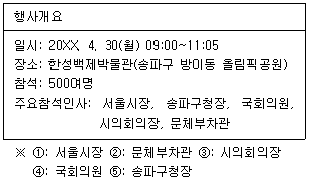
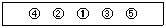
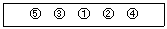
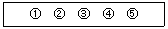
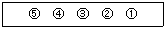
(정답률: 52%)
2과목: 경영일반
21. 다음은 기업윤리를 설명한 내용이다. 이 중 가장 적합한 내용은?
- 기업은 소비자와의 관계에서 고객을 통해 얻은 이익을 소비자 중심주의를 채택하여 소비자의 만족도를 높여야 한다.
- 기업이 종업원과의 관계에서 종업원의 승진, 이동, 보상, 해고 등에 대한 내용들은 기업윤리와 상관이 없다.
- 기업은 투자자와의 관계에서 그들의 권리보장은 관계없이 수익을 최우선적으로 증대시키기 위해 노력해야 한다.
- 기업은 매일 수 없는 윤리논쟁에 직면하고 있는데, 일반적으로 크게 소비자와의 관계, 기업구성원과의 관계, 기업투자자와의 관계, 국제기업과의 관계로 나눌 수 있다.
(정답률: 46%)
22. 다음의 경영환경요인들이 알맞게 연결된 것은 무엇인가?
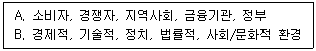
- A: 외부환경, 간접환경
- B: 외부환경, 과업환경
- A: 외부환경, 직접환경
- B: 내부환경, 일반환경
(정답률: 43%)
23. 다음은 카르텔에 대한 설명이다. 옳지 않은 것은?
- 카르텔은 동종 내지 유사 산업에 속하는 기업이 연합하는 것이다.
- 독립적인 기업들이 연합하는 것으로 서로 기업활동을 제한하며 법률적, 경제적으로도 상호 의존한다.
- 카르텔의 종류로 판매 카르텔, 구매 카르텔, 생산 카르텔이 있다.
- 일부 기업들의 가격담합 등의 폐해가 심각하여 국가에 의한 강제 카르텔 외에는 원칙적으로 금지 또는 규제하고 있다.
(정답률: 55%)
24. 다음 ( ㉠ )은/는 무엇에 대해 기술한 것인지 보기 중 가장 가까운 답을 고르시오.
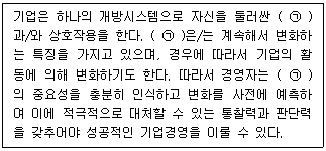
- 경영통제
- 경영환경
- 조직문화
- 정부정책
(정답률: 71%)
25. 다음 중 벤처캐피탈의 특징에 대한 설명으로 가장 적합하지 않은 것은?
- 투자수익의 원천을 주식 매각으로부터 얻는 자본수익보다는 배당금을 목적으로 투자하는 자금이다.
- 벤처캐피탈은 위험이 크지만 고수익을 지향하는 투기성 자금이라고 할 수 있다.
- 투자심사에 있어서 기업의 경영능력, 기술성, 성장성, 수익성 등을 중시한다.
- 투자기업의 경영권 획득을 목적으로 하지 않고 사업에 참여방식으로 투자하는 형식을 취한다.
(정답률: 46%)
26. 다음은 인수합병의 장점과 단점을 요약한 것이다. 이 중 가장 거리가 먼 것은?
- 시장에의 조기 진입 가능
- 취득자산 가치 저하 우려
- 투자비용의 절약
- 자금유출로 인한 재무 강화
(정답률: 59%)
27. 다음 중 주식회사의 특징으로 가장 거리가 먼 것은?
- 자본의 증권화, 즉 출자 단위를 균일한 주식으로 세분하여 출자를 용이하게 하고, 이를 증권시장에서 매매가 가능하도록 한다.
- 주식회사가 다액의 자본을 조달하기 쉬운 이유는 출자자의 유한책임제도를 이용하기 때문이다.
- 주주는 자신의 이익을 위하여 활동하고, 주주들의 부의 극대화가 저해될 때 대리인문제가 발생할 수 있다.
- 출자와 경영의 분리제도로 주주는 출자를 하여 자본위험을 부담하고, 중역은 경영의 직능을 담당하게 한다.
(정답률: 49%)
28. 기업조직의 통제기능의 필요성을 설명한 내용으로 가장 거리가 먼 것은?
- 끊임없이 변화하는 경영환경으로 이미 수립된 계획의 타당성확인을 위해
- 조직의 규모와 활동이 복잡하고 다양화됨에 따라 조직 내에서 발생하는 다양한 활동의 조정 및 통합을 위해
- 경영자의 의사결정의 오판이나 예측오류의 발생을 예방하고 정정하기 위해
- 경영자가 조직의 중앙집권화를 위해 권한위임을 최소화하고 부하 구성원 활동에 대한 감독을 강화하기 위해
(정답률: 49%)
29. 다음은 경영자의 의사결정역할에 대한 설명이다. 경영자의 의사결정역할에 대한 설명으로 거리가 먼 것은?
- 경영자는 새로운 아이디어를 내고 자원 활용과 기술 개발에 대한 결정을 한다.
- 경영자는 기업 외부로부터 투자를 유치하고 기업 홍보와 대변인의 역할을 수행한다.
- 경영자는 주어진 자원의 효율적 활용을 위해 기업 각 기능의 역할 및 자원 배분에 신중을 기한다.
- 경영자는 협상에서 많은 시간과 노력을 들여 유리한 결과를 이끌어내도록 최선을 다한다.
(정답률: 48%)
30. 다음 중 공식조직을 구조화할 때, 고려해야 할 사항에 대한 설명으로 옳지 않은 것은?
- 그레이프바인 시스템 활성화
- 권한의 위양 정도
- 조정 절차 매뉴얼
- 구체적인 정책 수립
(정답률: 58%)
31. 아래 도표와 같이 부하직원을 내집단과 외집단을 구분하여 설명하고 있는 리더십 이론은 무엇인가?
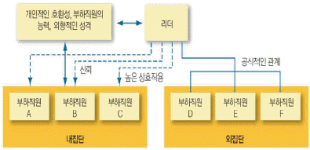
- 리더참여이론
- 상황적합이론
- 경로-목표이론
- 리더-부하 교환이론
(정답률: 57%)
32. 다음은 매슬로우의 욕구이론과 앨더퍼의 ERG이론을 비교 설명한 것이다. 가장 거리가 먼 내용은 무엇인가?
- 매슬로우의 생리적욕구와 앨더퍼의 존재욕구는 기본적으로 의식주에 대한 욕구로 조직에서의 기본임금이나 작업환경이 해당된다.
- 앨더퍼의 관계욕구는 매슬로우의 안전의 욕구 및 사회적욕구, 존경의 욕구 각각의 일부가 이에 해당된다.
- 앨더퍼의 성장욕구는 매슬로우의 자아실현욕구에 해당하는 것으로 조직 내에서의 능력개발이라기 보다는 개인이 일생을 통한 자기능력 극대화와 새로운 능력개발을 말한다.
- 매슬로우 이론과는 달리 앨더퍼는 욕구가 좌절되면 다시 퇴행할 수 있고, 동시에 여러 욕구가 존재할 수 있다고 주장한다.
(정답률: 46%)
33. 다음은 4P 마케팅 믹스의 구체적 내용이다. 옳지 않은 것은?
- Place: 재고, 서비스, 품질보증
- Price: 할인, 보조금, 지불기간
- Promotion: 광고, 인적판매, 판매촉진
- Product: 품질, 디자인, 브랜드명
(정답률: 67%)
34. 다음 (A)제약의 사례는 보기 중 어느 것에 해당되는 것인가?
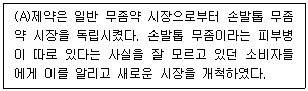
- 제품차별화
- 시장세분화
- 표적시장결정
- 제품포지셔닝
(정답률: 58%)
35. 경영활동에 활용되는 정보기술의 보고기능에 대한 설명으로 가장 적합하지 않은 것은?
- 데이터마트는 기업경영자료를 2차원 또는 3차원으로 나타내어 사용자가 시각적으로 쉽게 자료를 이해할 수 있도록 지원한다.
- 온라인분석처리(OLAP)는 사용자가 다차원 분석도구를 이용하여 의사결정에 활용하는 정보를 분석하는 과정을 말한다.
- 데이터마이닝은 데이터 사이의 관련성을 규명하여 의사결정에 도움을 주는 고차원의 통계적 알고리즘을 사용한 기법을 의미한다.
- 의사결정시스템은 경영자들에게 요약, 조직화된 데이터와 정보를 제공함으로써 의사결정을 지원하는 정보시스템을 말한다.
(정답률: 39%)
36. 다음 중 인사고과에서 발생할 수 있는 오류에 관한 설명으로 가장 적절하지 않은 것은?
- 종업원을 실제보다 높거나 후하게 평가하는 관대화경향이 발생할 수 있다.
- 출신지역, 직무, 인종 등의 특징이나 고정관념으로 평가자의 편견에 비추어 종업원을 평가하는 상동적 태도가 나타날 수 있다.
- 비교 대상이 무엇인지에 따라 평가결과가 달라지는 대비오류가 나타날 수 있다.
- 종업원의 한 면만을 기준으로 다른 것까지 평가해 버리는 중심화경향이 나타날 수 있다.
(정답률: 51%)
37. 다음은 재무상태표(대차대조표)를 작성할 때 각각의 계정과목에 대한 설명이다. 이 중 가장 거리가 먼 것은?
- 유동자산은 재고자산과 당좌자산으로 구성되며, 차변에 기재한다.
- 부채는 유동부채와 비유동부채로 구성되며, 대변에 기재한다.
- 비유동자산은 유형자산, 무형자산, 투자자산으로 구성되며, 차변에 기재한다.
- 자본은 자본금, 자본잉여금, 이익잉여금으로 구성되며, 차변에 기재한다.
(정답률: 42%)
38. 아래의 글이 설명하는 용어로 가장 적합한 것은?
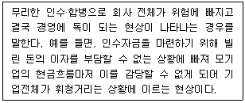
- 곰의 포옹
- 흑기사
- 독약 처방
- 승자의 저주
(정답률: 50%)
39. 최근 승차공유서비스인 카풀의 경우 택시업계와 갈등을 빚어 왔으며, 승합차 호출서비스와 개인택시 간에 서비스 불법논란이 불거지고 있다. 이처럼 한번 생산된 제품을 여럿이 함께 협력소비를 기본으로 한 방식을 일컫는 용어를 무엇이라 하는가?
- 공유소비
- 공유경영
- 공유경제
- 공유사회
(정답률: 55%)
40. 빅데이터 분석에 대한 설명으로 가장 적절치 않은 것은?
- 스마트폰 및 소셜미디어 등장으로 생산, 유통, 저장되는 정보량이 기하급수적으로 늘면서 대규모의 디지털 데이터에서 일정한 패턴을 읽고 해석하는 것이다.
- 일반 데이터와의 차이를 3V로 설명할 수 있는데, 용량(Volume), 유효성(Validity), 다양성(Variety)이 있는 자료를 말한다.
- 빅데이터 분석은 정보량이 방대해 지금까지 분석하기 어렵거나 이해할 수 없던 데이터를 분석하는 기술을 의미한다.
- 소셜미디어 서비스에서 유통되는 내용을 통해 대중의 심리변화와 소비자의 요구사항도 파악할 수 있어 마케팅 전략에도 이용이 가능하다.
(정답률: 54%)
3과목: 사무영어
41. According to the following Mr. Lee's schedule, which one is NOT true?
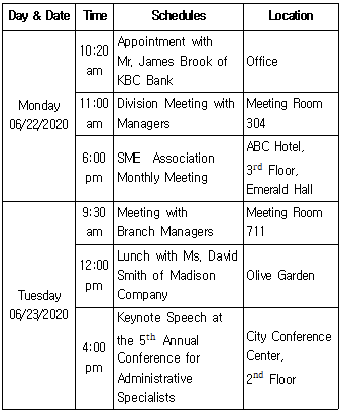
- Mr. Lee는 월요일 오후 6시에 SME 협회 월간 회의에 참석할 예정이다.
- Mr. Lee는 화요일 오전 9시 30분에 지점 관리자들과 회의실에서 회의가 있다.
- Mr. Lee는 화요일 오후 4시에 씨티 컨퍼런스 센터에서 폐회사를 한다.
- Mr. Lee는 월요일 오전 10시 20분에 사무실에서 Mr. James Brook과 만날 예정이다.
(정답률: 65%)
42. According to the followings, which one is true?
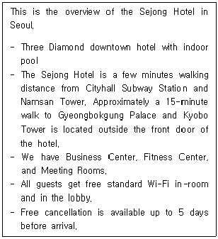
- There is no subway station near the hotel.
- Business Center and Fitness Center are in the Sejong Hotel.
- You can use standard Wi-Fi in your room with charge.
- You can cancel your reservation up to 3 days before your arrival without charge.
(정답률: 58%)
43. Which is true according to the following conversation?
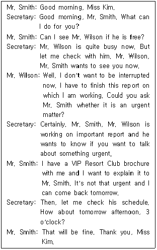
- Mr. Smith는 Mr. Wilson과 선약이 되어 있었다.
- Mr. Smith는 급한 업무로 Mr. Wilson을 만나기를 원했다.
- Mr. Smith는 VIP Resort Club 브로셔를 Mr. Wilson에게 설명하고자 하였다.
- Mr. Wilson은 자신의 일을 미루고 Mr. Smith를 바로 만나기로 하였다.
(정답률: 59%)
44. Which is the MOST appropriate expression for the blank below?
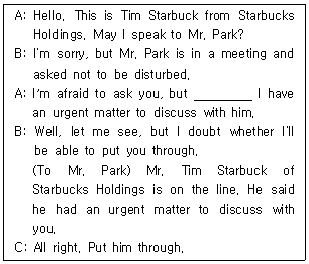
- could you please interrupt him for me?
- please ask him to be on the line.
- I can't wait until he is on the line.
- please tell him that I'm on the line.
(정답률: 48%)
45. According to the following memo, which is true?
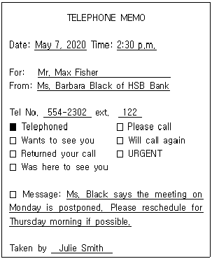
- Mr. Fisher에게 걸려온 전화의 메모를 Julie Smith가 작성하였다.
- HSB Bank의 Ms. Black은 월요일 회의가 목요일로 연기되었음을 알리기 위해 연락하였다.
- Mr. Fisher의 전화번호는 554-2302이고 내선번호는 122이다.
- Ms. Black은 Mr. Fisher가 가능한 빨리 전화해주기를 바란다.
(정답률: 38%)
46. According to the following invitation, which is NOT true?
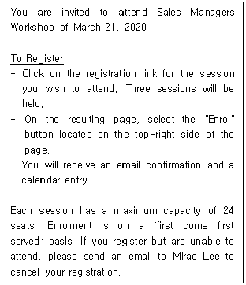
- 영업관리자 워크숍에 참석가능한 최대 인원은 총 72명이다.
- 워크샵 참석 신청은 컴퓨터를 이용해서 3개의 세션에 모두 신청 등록을 해야 한다.
- 'Enrol' 버튼은 결과 페이지의 상단 오른쪽에 위치한다.
- 워크숍 참석 신청을 위한 등록은 선착순이다.
(정답률: 50%)
47. Read the following letter and choose the one which is NOT true.
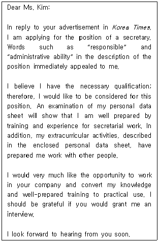
- 이 편지는 지원자가 기관의 채용 광고를 본 후 관심 있는 직종에 지원의사를 밝히기 위해 작성한 것이다.
- 지원자는 본 문서에 본인의 이력서를 첨부하였다.
- 지원자는 비서 경험이 없는 신입비서로서, 입사 후 비서직에서 훈련받기를 원한다는 내용이다.
- 지원자는 다양한 과외 활동을 통해 협업 능력을 길렀다.
(정답률: 59%)
48. 다음 편지의 구성요소 중 가장 바르게 표현된 것은 무엇인가?
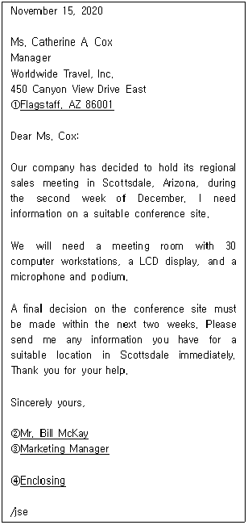
- Flagstaff. AZ 86001
- Mr. Bill McKay
- Marketing Manager
- Enclosing
(정답률: 40%)
49. 다음 밑줄 친 단어의 사용이 바르지 않은 것은?
- The minutes of a meeting is the written records of the things that are discussed or decided at it.
- Exchange rate is the money that you need to spend in order to do something.
- When someone gives you a quotation, he/she tells you how much he/she will charge to do a particular piece of work.
- An agenda is a list of the items that have to be discussed at a meeting.
(정답률: 37%)
50. Which is the MOST appropriate expression for the blank?
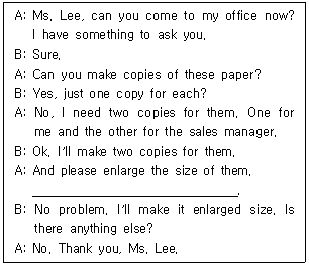
- Please reduce this paper to 50%.
- The letters are too small to read.
- Make color copies, please.
- I've done about half for it.
(정답률: 56%)
51. Read the following conversation and choose one which is NOT true.
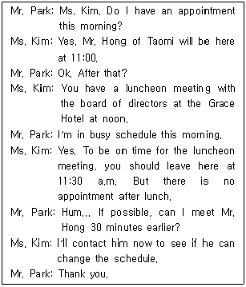
- Mr. Park has a full schedule in the afternoon.
- Mr. Park wants to meet Mr. Hong at 10:30.
- Ms. Kim will call Mr. Hong immediately after talking to her boss.
- Grace Hotel is located about 30 minutes away from Mr. Park's company.
(정답률: 47%)
52. What is the MOST proper expression for the blank?
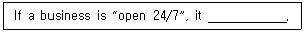
- is open for 24 days and closed for seven days every month
- opens at 7:00 in the morning
- never closes
- is open for seven hours each day
(정답률: 52%)
53. Which English sentence is grammatically LEAST correct?
- May I ask what your visit is in regard to?
- I'd like to schedule a meeting for discuss with the project.
- I think we need at least two hours to plan for that project.
- You may be asked to help yourself to a soft drink.
(정답률: 29%)
54. Followings are sets of conversation. Choose one that does NOT match correctly each other.
- A: Did you get an email from him?
B: I should have gotten it done tomorrow. - A: How's the project going?
B: Everything is okay with it. - A: I'm sick and tired of writing a report.
B: So am I. I think I have written as many as 200 reports this year. - A: Did you finish the sales report?
B: Oops! It slipped my mind.
(정답률: 48%)
55. Followings are sets of Korean sentence translated into English. Which is the LEAST appropriate expression?
- 그 마을에 있는 역사적인 건물들의 본래 외관은 보존될 것이다.
→ The original appearance of the town's historic buildings will be preserved. - 다른 회사와 합병하는 것은 언제나 어렵고 민감한 문제이다.
→ Merging another company are always a difficult and sensible issue. - 숙련된 조립라인 작업자들이 좀 더 세심한 경향이 있다.
→ Experienced assembly-line workers tend to be more attentive. - Mr. Nick Jordan은 나의 직속 상사이다.
→ Mr. Nick Jordan is my immediate supervisor.
(정답률: 38%)
56. Followings are the mailing information phrases of an envelope. Which is the MOST appropriate description?
- Do not bend: It will break easily.
- Fragile: It should be sent as quickly as possible.
- Urgent: Keep it flat.
- Confidential: Only the addressee should read it.
(정답률: 46%)
57. Choose one to fill in the blank below with the MOST appropriate vocabulary term.
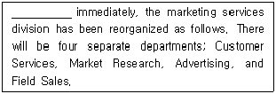
- Efficient
- Efficiently
- Effective
- Effection
(정답률: 41%)
58. Which of (a)-(d) has most AWKWARD part?
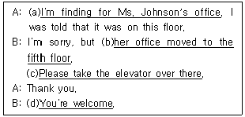
- (a)
- (b)
- (c)
- (d)
(정답률: 33%)
59. Which is the MOST appropriate expression for the underlined Korean sentence?
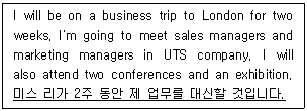
- I will substitute Miss Lee for two weeks.
- Miss Lee will get me to replace her work for two weeks.
- Miss Lee will cover for me for two weeks.
- I will work instead of Miss Lee for the next two weeks.
(정답률: 58%)
60. Followings are expressions to confirm an appointment that has already been made. Which is the MOST appropriate expression?
- Would you like to meet on the 2nd at 10:00?
- I'd like to remind you of the meeting on the 2nd at 10:00.
- Do you have any schedule on the 2nd at 10:00?
- Are you free on the 2nd at 10:00?
(정답률: 54%)
4과목: 사무정보관리
61. 다음은 네트워크와 관련 장비에 대한 설명이다. 가장 적절하지 않은 설명은?
- 랜카드(LAN card): LAN선을 연결하기 위한 장치로서 회선을 통해 사용자 간의 정보를 전송하거나 전송받을 수 있도록 변환하는 역할을 한다.
- 허브(Hub): 여러 대의 컴퓨터를 LAN에 접속시키는 네트워크 장치이다.
- 포트(Port): 컴퓨터가 통신을 위해 사용해야 하는 컴퓨터의 연결 부분으로 이 장치를 통하여 전용 회선, 프린터, 모니터 등의 주변 장치와 연결이 가능하고 주로 컴퓨터 뒷면에 부착되어 있다.
- 엑스트라넷(Extranet): 기존의 인터넷을 이용해 조직 내부에서만 사용하는, 조직 내부의 정보를 공유하며 업무를 통합하는 정보시스템이다.
(정답률: 61%)
62. 다음 중 아래 신문기사에 대한 내용으로 가장 연관이 적은 것은?
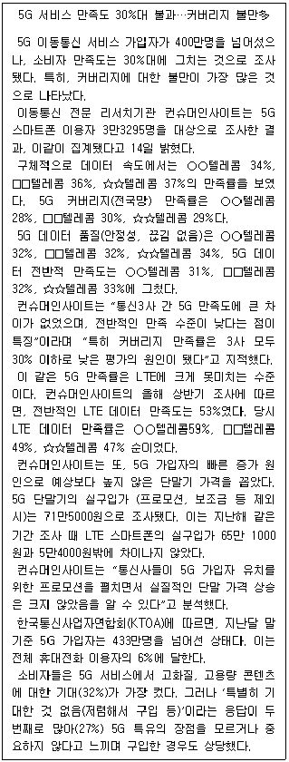
- 가격에 의한 요인으로 5G 가입자는 빠른 속도로 증가하고 있다.
- 5G에 대한 소비자의 만족도는 특히 5G 커버리지(전국망) 만족률에서 낮게 나타났다.
- 5G 만족도는 통신 3사 모두 낮으며 데이터 속도와 커버리지 만족도는 ○○텔레콤이 가장 높다.
- 지난달 말 기준 5G 가입자는 전체 휴대전화 이용자의 1/10이 되지 않았다.
(정답률: 55%)
63. 다음 중 모바일 기기의 특징으로 가장 적절하지 않은 것은?
- 무선통신
- 휴대성
- 긴 라이프사이클
- 터치방식의 입력
(정답률: 69%)
64. 다음 중 문서관리의 원칙과 설명이 적절하게 연결되지 않은 것은?
- 표준화: 누가, 언제 처리하더라도 같은 방법이 적용될 수 있도록 문서 관리 시스템을 표준화시킴으로써 원하는 문서를 신속하게 처리할 수 있다.
- 간소화: 중복되는 것이나 불필요한 것을 없애고 원본이 명확하게 정리되어 있는데도 불필요한 복사본을 가지고 있지 않도록 한다.
- 전문화: 문서 사무의 숙련도를 높이고 문서 사무의 능률을 증대시킬 수 있다.
- 자동화: 필요한 문서를 신속하게 찾을 수 있다. 문서가 보관된 서류함이나 서랍의 위치를 누구나 쉽게 알 수 있도록 소재를 명시해 둔다.
(정답률: 59%)
65. 다음은 여러 가지 문서 작성을 위한 자료 수집 방법이다. 가장 적절하지 않은 것은?
- 초대장을 작성하는 경우 해당 장소로의 접근 방법(이동 경로, 교통편, 주차장 이용 등)에 대한 자료수집이 필요하다.
- 감사장을 작성할 경우 감사장을 받을 상대가 어떤 호의를 왜 베풀었는지에 관한 내용을 수집하는 것이 가장 중요하다.
- 상사를 대신하여 일처리를 하기 위해 위임장을 작성하는 경우 위임할 사람의 정보, 위임받을 사람의 정보 등이 필요하다.
- 이메일로 문서를 작성할 경우 전달 방법이 전자적인 형태일 뿐, 문서의 내용상 수집할 사항은 종이 문서와 비교하여 특별히 달라지는 것은 아니다.
(정답률: 41%)
66. 다음 중 문장부호와 띄어쓰기가 공공언어 바로 쓰기에 맞춰 올바르게 바뀐 것은?
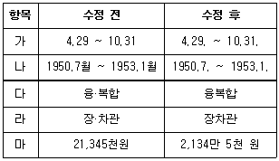
- 가, 나, 다, 라, 마
- 가, 나, 라, 마
- 가, 나, 다, 마
- 가, 나, 마
(정답률: 25%)
67. 다음은 사내 문서의 유형을 분류한 것이다. 유형과 종류가 잘못 연결된 것끼리 묶인 것은?
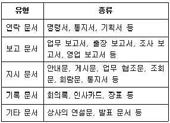
- 연락 문서, 기타 문서
- 보고 문서, 지시 문서
- 기록 문서, 기타 문서
- 연락 문서, 지시 문서
(정답률: 52%)
68. 전자문서 관리에 대한 설명으로 틀린 것은?
- 파일명이 문서 내용을 충분히 반영하여 파일명만으로도 충분히 문서 내용을 유추할 수 있는지 확인한다.
- 전자 문서의 경우, 종이 문서와 동일하게 두 가지 이상의 주제별 정리를 이용할 경우 cross-reference를 반드시 표시해 두어야 한다.
- 조직의 업무 분류 체계를 근거로 하여 문서의 종류, 보안 등급에 따라 접근에 대한 권한을 부여하여 분류한다.
- 진행 중인 문서의 경우, 문서의 진행 처리 단계에 따라서 문서의 파일명을 변경하거나 변경된 폴더로 이동시켜서 정리·보관한다.
(정답률: 41%)
69. 비서가 업무상 문서를 작성할 때 유의할 사항으로 잘못 기술된 것은?
- 주요 메시지를 문서 작성 시작부분에서 기술하며, 그 이후에는 이에 대한 세부 내용을 구체화하는 형식인 두괄식 구성이 사무 문서에서 대체로 선호된다.
- 간단명료한 문서 작성을 위해 가급적 단어를 적게 사용하면 서도 메시지를 분명하게 전달한다.
- 비서가 상사를 대신하여 작성하는 문서는 상사가 직접 문서를 작성할 수 없는 상황임을 상세하게 밝히고 비서의 이름으로 나가는 것이 원칙이다.
- 문서가 제시간에 전달되지 못하면 작성된 목적을 달성할 수 없으므로 시간내 전달되기 위한 방식에 맞추어서 문서를 작성하여야 한다.
(정답률: 61%)
70. MS-Access로 만들어진 방문객 관리 DB를 이용하여 업무처리를 하고 있다. 월별 방문객수 및 방문 목적별 방문객 수와 같이 데이터의 계산을 할 수 있는 개체는?
- 테이블
- 페이지
- 쿼리
- 매크로
(정답률: 44%)
71. 다음 그래프를 통해서 알 수 있는 내용으로 가장 적절하지 않은 것은?
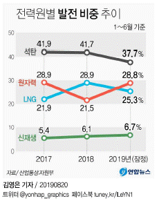
- 신재생 에너지의 비중이 매년 조금씩 증가하고 있는 추세이다.
- 석탄의 비중은 2019년은 2018년에 비해서 4% 감소했다.
- 원자력은 2018년에는 감소했으나, 2019년에는 2017년 수준으로 거의 회복했다.
- 2018년에는 석탄>LNG>원자력>신재생 순으로 비중이 높았다.
(정답률: 38%)
72. 다음 중 문서의 보존기간과 문서의 종류가 잘못 짝지어진 것은?
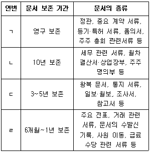
- ㄱ, ㄴ
- ㄴ, ㄷ
- ㄷ, ㄹ
- ㄹ, ㄱ
(정답률: 44%)
73. 전자결재시스템의 특징으로 볼 수 없는 것은?
- 전자결재시스템을 통해 시간적, 공간적 제약성을 극복할 수 있으나, 여러 사람이 동시에 내용을 열람하는 것은 불가능하다.
- 결재권자가 출장 중이라도 평소와 같은 통상적인 업무 수행이 가능하다.
- 경영 의사결정 사이클을 단축하는 효과를 지닌다.
- 결재 과정을 단축시키고 직접 접촉에 의한 업무 수행의 제한점을 극복할 수 있다.
(정답률: 63%)
74. 윈도우 운영체제를 사용하는 내 컴퓨터의 IP주소를 찾기 위해서, cmd를 실행하여 명령 프롬프트를 연 후 사용할 수 있는 명령어는?
- IPCONFIG
- CONFIGIP
- IPFINDER
- MSCONFIG
(정답률: 45%)
75. 다음 중 컴퓨터나 원거리 통신 장비 사이에서 메시지를 주고 받는 양식과 규칙의 체계에 해당하지 않는 것은?
- HTTP
- TELNET
- POP3
- RFID
(정답률: 43%)
76. 다음 중 밑줄 친 한글맞춤법이 잘못된 것은?
- 신용카드 결제일이 매월 25일이다.
- 난 겨울이 되면 으레 감기가 걸린다.
- 상무님이 이따가 처리할 테니 두고 가라고 하신다.
- 도대체 어따 대고 삿대질이야?
(정답률: 59%)
77. 사이버 환경에 적용가능한 인증기술 동향에 대한 설명으로 가장 부적절한 것은?
- 지식기반 사용자 인증방식은 사용자와 서버가 미리 설정해 공유한 비밀 정보를 기반으로 사용자를 인증하는 것으로 패스워드 인증이 일반적이다.
- 패스워드 인증 방식은 별도 하드웨어가 필요 없어 적은 비용으로 사용자 편의성을 높이는 장점이 있다.
- 소유기반 사용자 인증방식은 인증 토큰을 소유하고 이를 기반으로 사용자를 인증한다. 소프트웨어 형태의 예로 OTP 단말기와 하드웨어 형태의 예로 공인인증서로 구분된다.
- 소유기반 사용자 인증방식은 사용자 토큰에 관련한 인증시스템 구축이 어렵고, 최소 1회 이상 인증기관 또는 등록기관과 본인임을 확인해야 한다.
(정답률: 37%)
78. 다음 중 랜섬웨어 감염을 예방하기 위한 행동이 나열되어 있다. 이 중 적절하지 않은 것은?
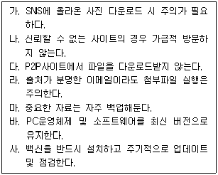
- 없다.
- 가
- 다
- 라
(정답률: 60%)
79. 다음은 ㈜진우 기업의 문서 접수 대장이다. 문서 접수 대장에 대한 설명이 가장 적절하지 않은 것은?
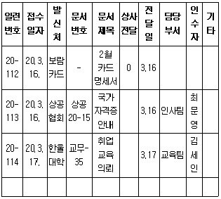
- 2020년 3월 16일에 접수한 문서는 두 건이다.
- 한울대학에서 온 취업교육의뢰 문서는 교육팀 김세인씨가 비서실로 전달해주었다.
- 상공협회에서 온 국가자격증 안내 문서는 인사팀에서 처리할 문서이다.
- 보람카드에서 온 카드명세서는 상사의 개인 카드 명세서여서 봉투를 개봉하지 않고 전달했다.
(정답률: 60%)
80. 프레젠테이션 과정은 발표 내용결정, 자료작성, 발표준비, 프레젠테이션 단계의 4단계로 구분할 수 있다. 보기 중 나머지와 단계가 다른 하나를 고르시오.
- 프레젠테이션의 목적 및 전략 설정 과정
- 프레젠테이션 스토리 설정 과정
- 수신인에 대한 정보 수집 및 분석 과정
- 청중이 이해하기 쉽게 일상적인 것과 비교할 수 있는 수치제시 과정
(정답률: 44%)